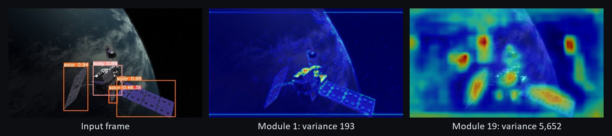
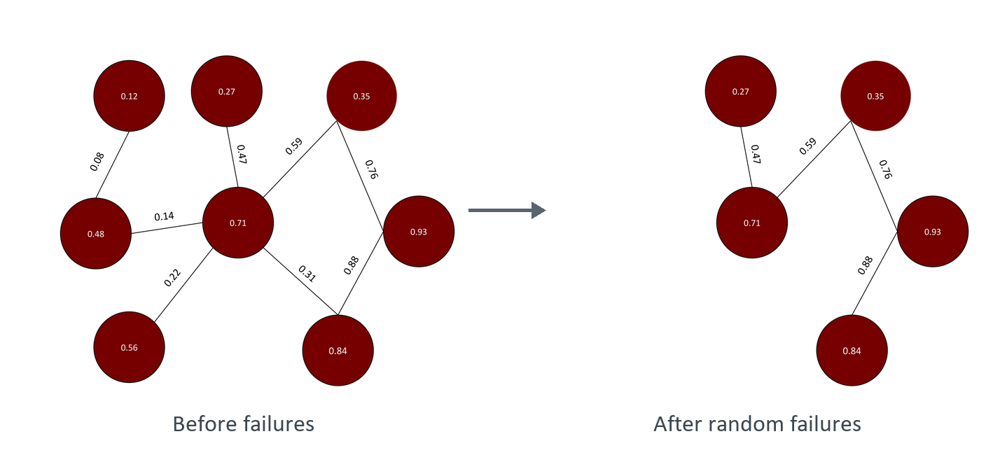

Label-free cancer cell detection from hyperspectral images
NETS Lab · NSF-funded
Hyperspectral microscopes record hundreds of wavelengths per pixel instead of three colours. This project uses that extra information to tell cancer cells from healthy cells without staining. I built the pipeline from raw scans to per-pixel predictions.
Raw scan→Calibration→U-Net segmentation→Spectral transformer ensemble→Spatial smoothing
Built a config-driven framework that scores every pipeline variant against the same fixed data split, so hundreds of cluster runs compare fairly.
Showed that models trained on one scan day lose most of their accuracy on another, and changed the evaluation to hold out whole days.
Measured noise in the fluorescence-based training labels and developed a short calibration step that adapts a model to a new scan day.
PyTorch
Computer vision
Transformers
HPC
Interactive
Explore a hyperspectral image
Drag the slider to change wavelength. Point at the image to see that spot's spectrum.
Loading the image…
Public data: HMI-LUSC, lung cancer tissue (H&E) at 10×, 61 bands. Yan et al., Scientific Data 13:415 (2026), dataset, CC BY 4.0. Not data from my lab.

PEEK maps how much information each layer carries. Low-variance layers like module 1 are candidates for removal; high-variance layers like module 19 stay.
PEEK-guided pruning for spacecraft
NETS Lab with Technetium Engineering · Small Satellite Conference poster, 2025
Spacecraft have strict limits on size, weight and power (SWaP), which rule out standard object-detection networks for rendezvous, proximity operations and docking. We used PEEK, an entropy-based explainability method, to find the YOLOv5 layers that carry the least information, removed them, and reconnected the network.
Cut model size by up to 30% and compute by 25%, with only minor accuracy loss, on both YOLOv5 nano and small.
Trained on satellite components: solar arrays, thrusters, antennas and bodies.
HALO: a Vision Transformer labelling satellite components (antenna, body, thrusters) with confidence scores.
HALO: Vision Transformers on low-SWaP hardware
With Sloan Hatter · advised by Dr. Ryan T. White · April 2026
Vision Transformers capture more global context than CNNs, but they are too heavy for satellite hardware as-is. HALO shrinks them through quantization so they can run on board for spotting broken components, docking and tracking debris.
Quantized Vision Transformers to FP16 and INT8 with ONNX and NVIDIA TensorRT and ran them on a Jetson AGX Orin.
Compared them against YOLOv5 CNNs for orbital object detection.
NETS Lab · for the Air Force Technical Applications Center (AFTAC)
Developing machine-learning algorithms that process geophysical signals and flag anomalous events, toward automatic detection of nuclear explosions.
Signal processing
Anomaly detection
Classification
Entropy-based ensembling
NETS Lab · for the US Army Engineer Research and Development Center (ERDC)
Developing ensembling techniques that weight model predictions using entropy, so more confident models count for more in the combined output.
Interactive
One sure model vs. two unsure ones
Model 1 votes A; models 2 and 3 vote B. Drag how sure each one is.
Majority voteB
Weighted by how sure
Each model's weight is 1 − H/log 3, where H is the entropy of its prediction. A generic illustration, not the method built for ERDC.
Ensemble methods
Information theory
Anomaly detection in satellite telemetry
NASA Goddard Space Flight Center · Magnetospheric Multiscale (MMS) mission · Summer 2025
Implemented Temporal Convolutional Networks (TCNs) to detect anomalous behaviour in MMS spacecraft telemetry, with the goal of predicting and preventing critical failures. Worked in the Ground System Software branch alongside the Heliophysics Science Division.
Time series
TCNs
Telemetry

A weighted network before and after random failures. The question is when cumulative losses cross a critical threshold.
Stochastic network resilience
Undergraduate research · advised by Dr. Ryan T. White · April 2026
When a network takes random losses, how likely is it that the cumulative damage crosses a critical limit, and in what order do components fail? Using renewal-reward processes and transform methods, I derived closed-form probabilities for the order in which thresholds are crossed, linking local random failures to global network risk.
Each attack knocks out nodes, which take edges with them, which carry weight. Press run and watch the three totals climb toward their limits.
Nodes lost
Edges lost
Weight lost
Theorem 2Simulation (3,000 runs)
Chance the limits break in order: nodes, then edges, then weight. Other settings are fixed at the poster's example (p₁ = p₂ = 0.5, r = 1, M₁ = 1, M₂ = 2).